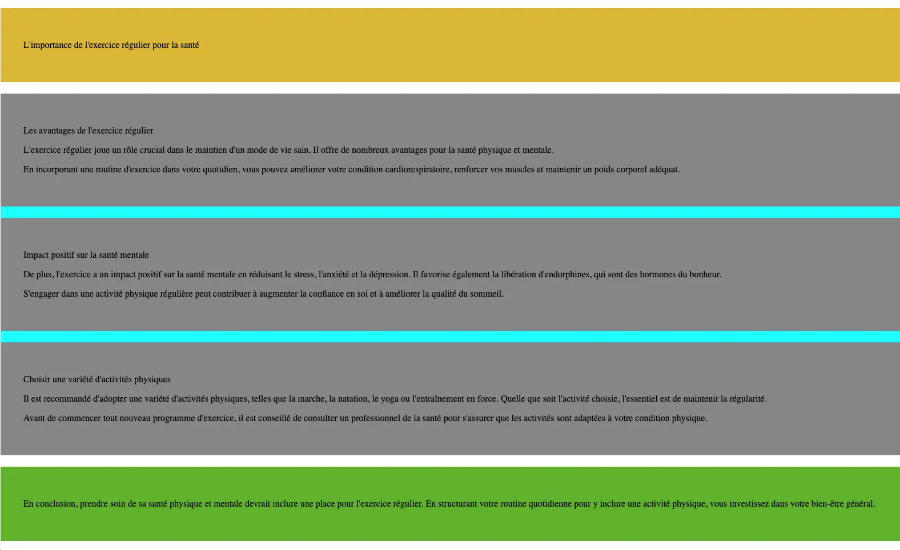

Identifier et appliquer correctement les balises sémantiques HTML pour structurer le contenu d'une page web.
Considérez les paragraphes de texte suivant et utilisez les balises sémantiques HTML appropriées pour structurer le texte en conséquence. Choisissez les balises qui décrivent au mieux le type de contenu de chaque partie du texte. (<title> <header> <main> <section> <footer>)
L'importance de l'exercice régulier pour la santé
L'exercice régulier joue un rôle crucial dans le maintien d'un mode de vie sain. Il offre de nombreux avantages pour la santé physique et mentale. En incorporant une routine d'exercice dans votre quotidien, vous pouvez améliorer votre condition cardiorespiratoire, renforcer vos muscles et maintenir un poids corporel adéquat.
De plus, l'exercice a un impact positif sur la santé mentale en réduisant le stress, l'anxiété et la dépression. Il favorise également la libération d'endorphines, qui sont des hormones du bonheur. S'engager dans une activité physique régulière peut contribuer à augmenter la confiance en soi et à améliorer la qualité du sommeil.
Il est recommandé d'adopter une variété d'activités physiques, telles que la marche, la natation, le yoga ou l'entraînement en force. Quelle que soit l'activité choisie, l'essentiel est de maintenir la régularité. Avant de commencer tout nouveau programme d'exercice, il est conseillé de consulter un professionnel de la santé pour s'assurer que les activités sont adaptées à votre condition physique.
En conclusion, prendre soin de sa santé physique et mentale devrait inclure une place pour l'exercice régulier. En structurant votre routine quotidienne pour y inclure une activité physique, vous investissez dans votre bien-être général.
Après avoir terminé l'exercice, votre texte devrait être structuré à l'aide des balises sémantiques HTML appropriées pour refléter la hiérarchie et le type de contenu décrit dans les instructions.